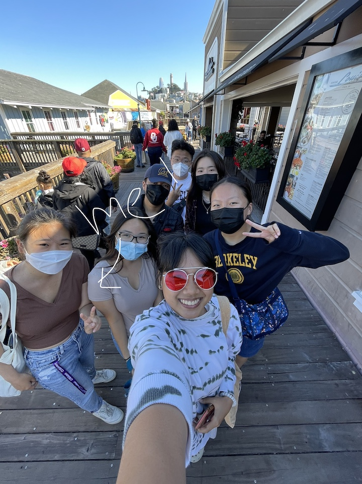

Natalie
Computer Science Major, 1st Year
Hi! I’m Natalie, a freshman at Berkeley from the South Bay Area who wants to study Computer Science and possibly Linguistics. In my free time, I like reading, writing, listening to history podcasts, and making Chinese food. I also love tuna poke and eating breakfast for lunch or dinner, and I'm super excited to learn web design!
- Yogurt Park
- Brown's Cafe
- Kimchi Garden

Twitter
- I learned how important even subtle design choices can be in curating the user experience. Even if someone might not consciously notice a seemingly trivial design choice, like when Airbnb uses "Try London" instead of "Search here," it's all the little things that subconsciously influence users and direct their experienes and actions.
- My favorite parts of the article were the gifs that went through and gradually deconstructed the designs of popular apps. It was really interesting to watch each component fall into place, and it helped me process the precise details and elements that I wouldn't have noticed otherwise.
- "There’s a composer in view to add another tweet and the language is specific. It’s not just 'Add a Tweet', it’s 'Add another Tweet.'"
- 8/10!